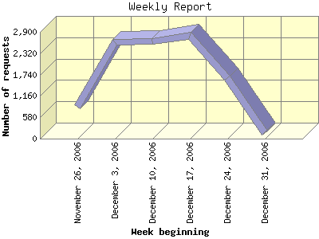

Report generated by Analog 6.0 and Report Magic 2.21
|
Web Server Statistics for "Harish Narayanan (hnarayan) - December 2006" Report generated by Analog 6.0 and Report Magic 2.21 |
The Weekly Report identifies the activity for each week within the report
time frame. Remember that one page hit can result in several server requests
as the images for each page are loaded.
Note: Depending on the
report time frame for this report the first and last week may not represent
a full seven day week, resulting in lower hits.

| Week beginning | Number of requests | Number of bytes transferred | Percentage of the bytes | Percentage of the requests | |
|---|---|---|---|---|---|
| 1. | November 26, 2006 | 856 | 120.775 MB | 9.71% | 8.01% |
| 2. | December 3, 2006 | 2,608 | 434.865 MB | 34.96% | 24.40% |
| 3. | December 10, 2006 | 2,631 | 177.438 MB | 14.26% | 24.61% |
| 4. | December 17, 2006 | 2,801 | 314.007 MB | 25.24% | 26.20% |
| 5. | December 24, 2006 | 1,646 | 183.797 MB | 14.78% | 15.40% |
| 6. | December 31, 2006 | 148 | 13.086 MB | 1.05% | 1.38% |
Most active week beginning December 3, 2006 : 1,362 pages sent. 2,801 requests handled. 329,259,694.00 served.
Weekly average: 1,781 requests handled. 207.328 MB served.
This report was generated on January 4, 2007 13:06.
Report time frame December 1, 2006 00:13 to December 31, 2006 23:54.
| Web statistics report produced by: | |
 Analog 6.0 Analog 6.0 |  Report Magic 2.21 Report Magic 2.21 |